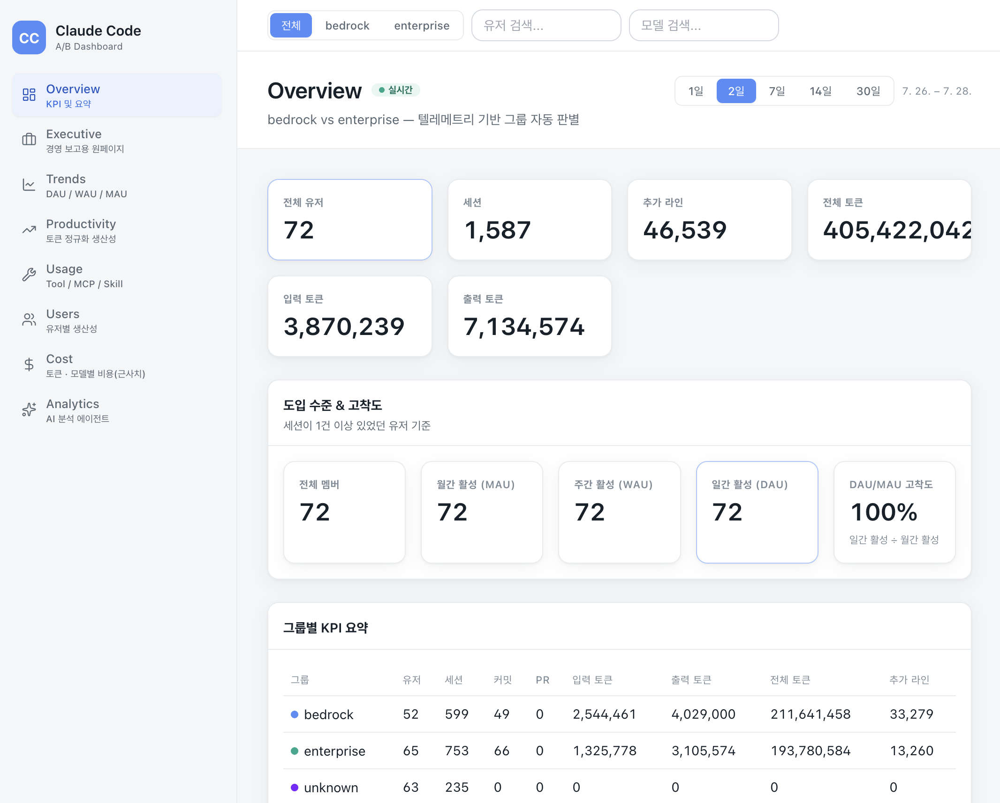
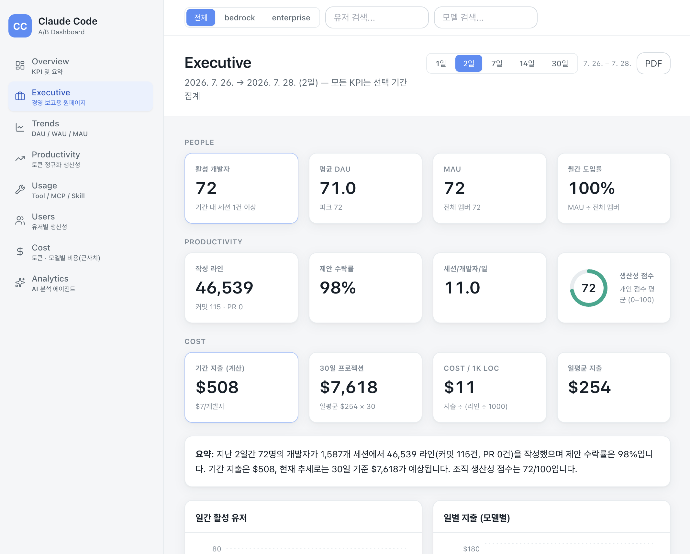
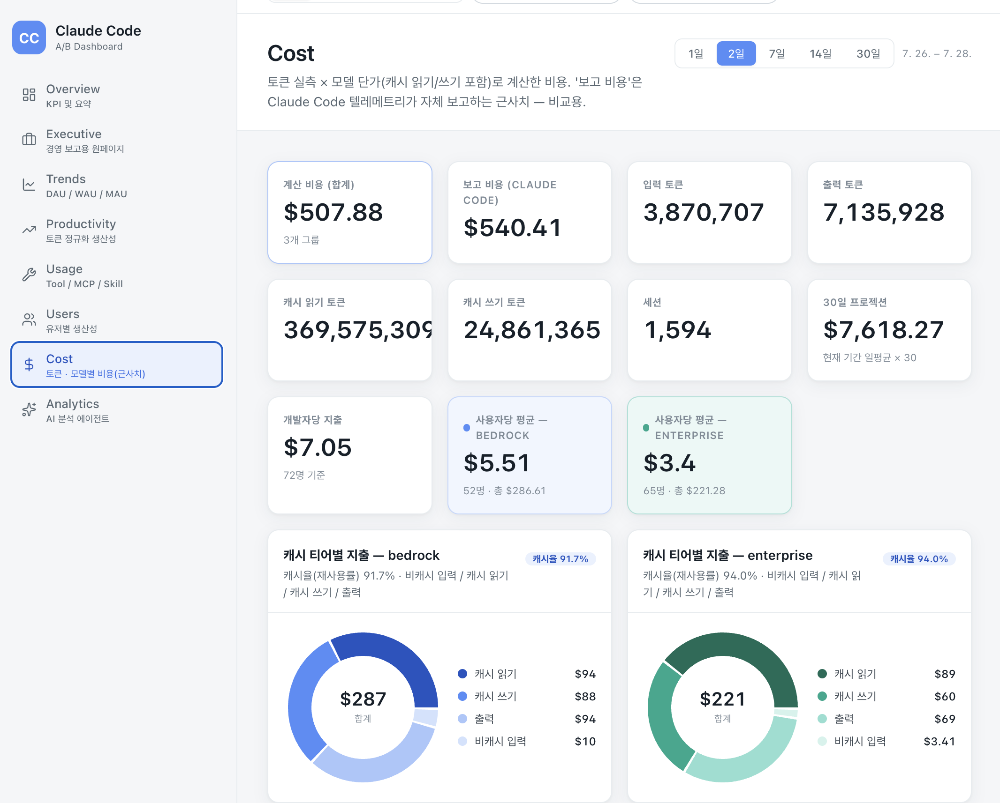
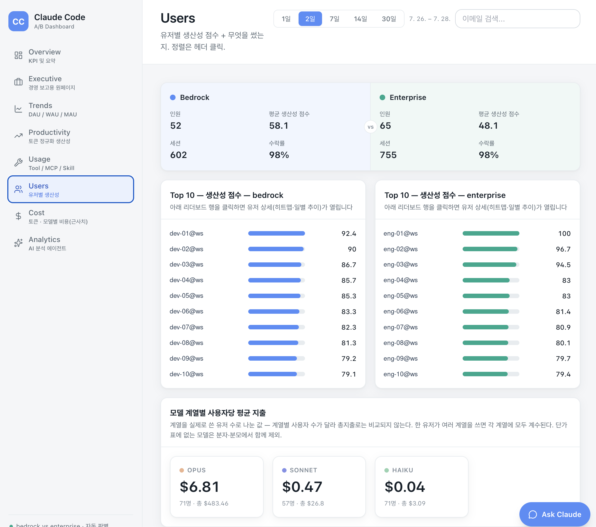
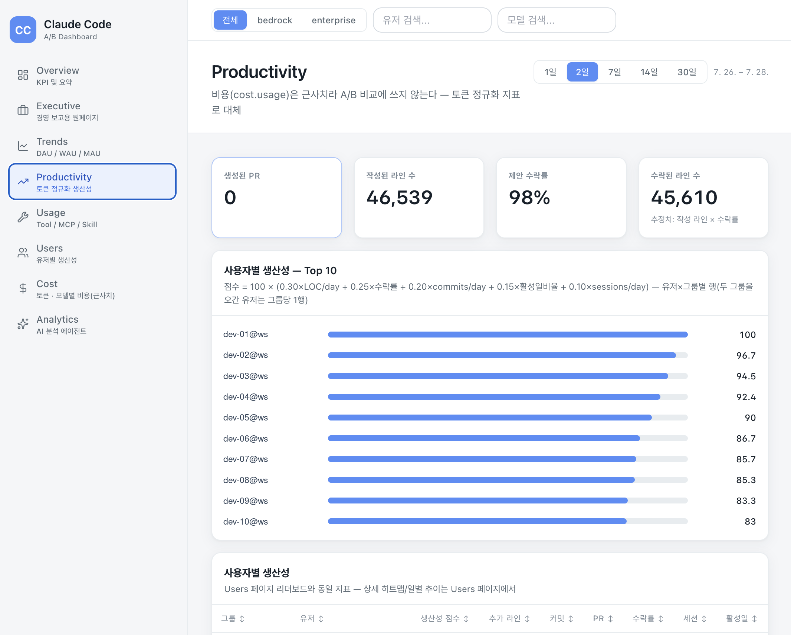
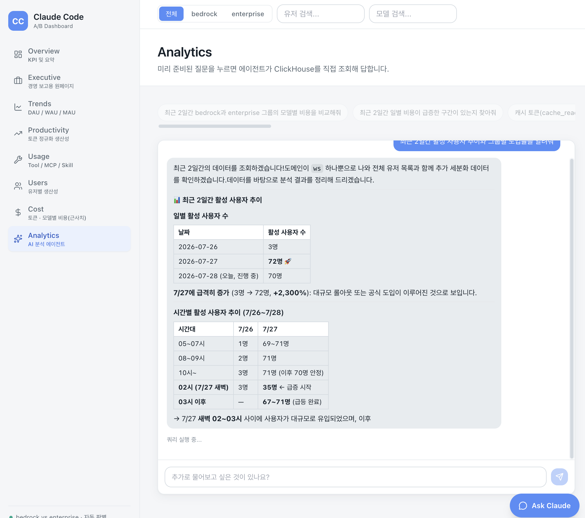

Measured, not estimated
Claude Code 사용량을
텔레메트리로 실측하는 대시보드
Claude Code가 내보내는 OpenTelemetry 메트릭·로그를 ClickHouse에 모아, 비용 · 도입 · 생산성 KPI로 집계합니다. Amazon Bedrock으로 쓴 세션과 Claude Enterprise로 쓴 세션을 자동으로 갈라 나란히 비교하고, 화면에 없는 질문은 AI 에이전트가 ClickHouse를 직접 조회해 답합니다. 애플리케이션은 컨테이너 하나라 EKS든 ECS든 같은 이미지로 돌아갑니다.
28초 무음 데모 — 실제 워크샵 데이터(2026-07-26 ~ 07-28, 개발자 72명)로 찍은 화면입니다.
이 화면이 답하는 질문
워크샵 참가자는 로그인할 때 인증 방식을 스스로 고릅니다. 그래서 "누가 어느 그룹인지"를 사전에 심을 수 없고, 세션이 실제로 호출한 모델 이름과 조직 식별자에서 사후에 판별합니다. 아래 수치는 그 판별을 거친 실측값입니다.
bedrock vs enterprise
그룹은 세션 단위로 판별합니다. 한 사람이 두 방식을 번갈아 쓴 경우가 실제로 있었고, 유저 단위로 판별하면 소수의 bedrock 세션이 그 사람의 enterprise 세션까지 덮어써 버렸습니다(실측 15세션 중 3건).
bedrock
개발자 52명 · 세션 602건 · 평균 생산성 점수 58.1 · 수락률 98% · 캐시율 91.7% · 사용자당 평균 $5.51
판별 근거: 호출 모델 이름에 anthropic. 또는 :가 포함
(예: global.anthropic.claude-sonnet-5)
enterprise
개발자 65명 · 세션 755건 · 평균 생산성 점수 48.1 · 수락률 98% · 캐시율 94.0% · 사용자당 평균 $3.40
판별 근거: 모델 이름에 Bedrock 신호가 없고 datapoint에
organization.id가 실려 있음 (예: claude-sonnet-5)
두 그룹 합이 전체 유저 수와 맞지 않는 것은 정상입니다 — 어느 쪽 신호도 없는
unknown 세션이 약 11% 있고, 한 유저가 두 그룹에 모두 등장할 수 있습니다.
그룹 비교 화면은 unknown을 제외하고, 조직 전체 합계를 보여주는 몇몇
엔드포인트는 포함합니다.
AI로 분석 — 화면에 없는 질문은 물어보면 된다
KPI 화면은 미리 정한 질문에만 답합니다. Analytics 탭의 에이전트는 자연어 질문을 받아 ClickHouse에 읽기 전용 SQL을 직접 실행하고, 그 결과로 표와 요약을 만들어 줍니다. Amazon Bedrock의 Claude가 뒤에 있고, 응답은 SSE로 스트리밍됩니다.
미리 준비된 질문
비용 · 도입/활동 · 생산성 · 이상 탐지 네 갈래로 프리셋이 있습니다 — "최근 N일간 bedrock과 enterprise 그룹의 모델별 비용을 비교해줘", "텔레메트리 수집이 끊긴 구간이 있는지 찾아줘" 같은 것들. 누르면 그대로 에이전트에게 갑니다.
스키마를 아는 프롬프트
누적 카운터 diff, 세션 단위 그룹 판별, 수집 끊김은 "행 도착 여부로 본다" 같은 이
데이터셋의 함정이 시스템 프롬프트에 들어 있습니다. 모델이 sum(Value)로
과대집계하거나 존재하지 않는 그룹 컬럼을 찾아다니지 않도록 하는 장치입니다.
SQL 샌드박스
LLM이 만든 SQL은 sanitizeSql()을 통과해야 합니다 —
SELECT/WITH 단일 문장만, 테이블 함수
(url()·s3()·file()) 차단,
claude_code 스키마 밖 조회 차단, 결과 200행 상한. ClickHouse 쪽 계정도
읽기 전용입니다.
에이전트가 보는 결과 행은 이메일 마스킹을 거칠 수 있고(PII_MASK_ENABLED),
ClickHouse 오류 메시지가 입력값을 에코하는 경로는 플래그와 무관하게 항상 마스킹합니다.
EKS든 ECS든 — 필요한 건 ClickHouse 하나
대시보드는 컨테이너 하나입니다. 멀티스테이지 빌드로 React SPA를
dist/로 만들고, Node 서버가 API와 정적 파일을 같이 서빙합니다
(PORT=8080, non-root). 쿠버네티스에 의존하는 코드는 없습니다 — 현재
운영은 EKS(Graviton 노드풀)지만, 같은 이미지를 ECS/Fargate 태스크로 그대로 띄울 수
있습니다.
런타임이 요구하는 것
HTTP로 닿는 ClickHouse(기본 8123)와 접속 정보 4개
(CH_URL/CH_DB/CH_USER/CH_PASSWORD).
그 외는 전부 선택입니다.
EKS (현재)
Deployment 2 replica + ClickHouse Kubernetes Operator, ClickHouse Keeper는 별도
StatefulSet. Terraform 전체가 infra/에 있습니다.
ECS / Fargate
linux/arm64 태스크 정의 + ALB 타깃 8080, 헬스체크는
/healthz(Basic Auth 면제). Ask Claude 챗을 쓰려면 태스크 롤에 Bedrock
InvokeModelWithResponseStream 권한만 주면 됩니다.
로컬 / 온프렘
docker compose 한 줄로 ClickHouse까지 함께 뜁니다. ClickHouse가
자체 호스팅이든 매니지드든 앱은 구분하지 않습니다.
단, 이 저장소의 Terraform은 EKS 기준으로만 작성돼 있습니다. ECS로 옮기려면 태스크 정의·서비스·ALB IaC는 따로 써야 합니다 — 애플리케이션 이미지와 환경 변수는 그대로입니다.
화면
8개 페이지 — Overview(KPI 요약), Executive(경영 보고 원페이지), Trends(DAU/WAU/MAU), Productivity(토큰 정규화 생산성), Usage(Tool/MCP/Skill), Users(유저별 상세), Cost(모델별 비용), Analytics(AI 분석 에이전트).






리더보드에 보이던 참가자 계정 식별자는 공개용으로 dev-NN@ws /
eng-NN@ws로 치환했습니다. 나머지 수치는 손대지 않은 실측값입니다.
직접 돌려보기
서버는 빌드 단계 없는 ESM Node.js, 웹은 Vite 빌드입니다. ClickHouse까지 포함한 전체 스택은 compose로 뜁니다.
# 서버
cd dashboard/server && npm install && npm run dev
# 웹 (별 터미널)
cd dashboard/web && npm install && npm run dev
# 전체 스택 (ClickHouse 포함)
docker compose -f dashboard/docker-compose.yml up
데모/워크샵용 시드 데이터는 dashboard/seed/*.sql에 있습니다. 배포는
Operations를, 데이터 모델과 파이프라인은
Architecture를 보세요.